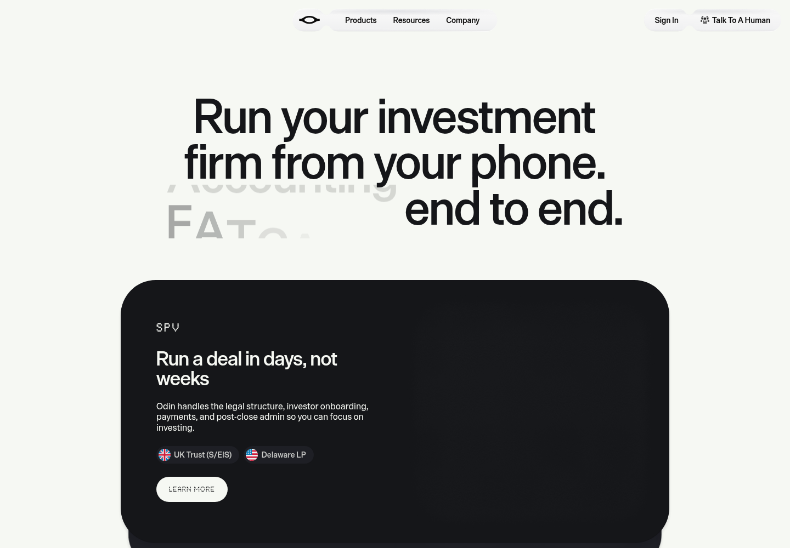
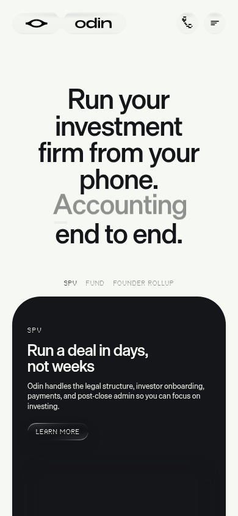

Independent concept by Ayo AhmedCalm clarity for the
last mile of a deal.
I recorded Odin's public visual language before building Close Control: warm space, literal eye geometry, large restrained sans type, pill controls and broad dark surfaces. My workbench will use synthetic data and will stop at a revision-bound human handoff.
Synthetic workflowKnow what's blocking.
Know what changed.
Exact cash arithmetic, explainable exceptions and an approval tied to the current revision. I use explicit text with every status.
This is a visual specimen. It does not submit a review.
Live reference, captured before implementation
12 October 2026 · desktop 1440 × 1000 · mobile 390 × 844. I waited ten seconds for the entrance treatment, then inspected both screenshots. The secondary hero word remains animated. Some decorative remote media was unavailable.

Desktop homepage evidence, sharp main heading after the entrance transition.
Mobile homepage evidence, 20 px gutters and stacked type.The live CSS names Die Grotesk C/A and MD Thermochrome. I do not redistribute those fonts; this guide uses system sans. The eye/wordmark asset belongs to Odin; I found no license grant and make no affiliation claim. Read my design and rights notes · Read my research.